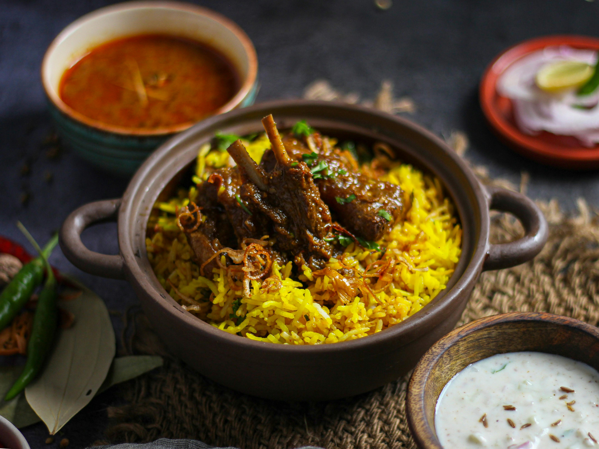

Here the collection of your favourite food!
1. Paneer Tikka

Ingredients:
- 250g paneer, cubed
- 1 cup yogurt
- 2 tbsp gram flour (besan)
- 1 tbsp ginger-garlic paste
- 1 tbsp lemon juice
- Spices: 1 tsp turmeric, 1 tsp red chili powder, 1 tsp garam masala,
1 tsp cumin powder, 1
tsp
coriander powder, salt to taste
- 2 tbsp oil
- 1 bell pepper, 1 onion, 1 tomato (all cut into squares)
- Skewers
Instructions:
- Marinade: Mix yogurt, gram flour, ginger-garlic paste, lemon juice, spices, and oil.
- Marinate: Coat paneer and veggies with marinade. Refrigerate for 30 minutes.
- Skewer: Thread paneer and veggies onto skewers.
- Cook: Grill or bake at 200°C (392°F) for 15-20 minutes, turning occasionally.
- Serve: Garnish with lemon wedges and serve with mint chutney.
2. Momos

Ingredients:
- Dough: 2 cups all-purpose flour, pinch of salt, water
- Filling: 1 cup chopped veggies, 1/2 cup chopped onions, 2-3 minced garlic cloves, 1-inch grated
ginger,
1-2 chopped green chilies, 2 tbsp soy sauce, 1 tbsp oil, salt, pepper, optional minced meat
Instructions:
- Dough: Mix flour and salt, add water, knead, and let rest for 30 minutes.
- Filling: Sauté onions, garlic, ginger, and chilies in oil. Add veggies and soy sauce, cook until
tender.
- Assemble: Roll dough into wrappers, fill, and seal.
- Steam: Steam momos for 10-12 minutes until cooked.
3. Mutton Biryani

Ingredients:
- Mutton pieces
- Basmati rice
- Onions, tomatoes, yogurt
- Ginger-garlic paste
- Biryani spices (cinnamon, cloves, cardamom, bay leaves)
- Garam masala, turmeric, red chili powder, coriander powder
- Fresh herbs (mint and coriander leaves)
- Ghee or oil
- Saffron milk (optional)
- Lemon juice
- Salt
Instructions:
- Marinate Mutton: Mix mutton with yogurt, ginger-garlic paste, and spices. Marinate for 1-2
hours.
- Cook Rice: Partially cook rice with whole spices until 70% done.
- Cook Mutton: Fry onions, add marinated mutton, tomatoes, and cook until tender.
- Layer and Dum: Layer mutton and rice in a pot, add herbs, saffron milk, and lemon juice. Seal
and
cook on low heat (dum) for 20-25 minutes.
4. Chicken Pizza

Ingredients:
- Dough: 2 cups flour, 1 tsp sugar, 1 tsp salt, 1 tbsp olive oil, 1 cup warm water, 1 tsp
yeast
- Toppings: 1 cup cooked chicken, 1 cup pizza sauce, 2 cups mozzarella cheese, sliced onions,
bell
peppers, black olives, dried oregano, dried basil
Instructions:
- Dough: Dissolve sugar and yeast in warm water. Mix with flour, salt, and olive oil. Knead and
let rise
for 1 hour.
- Preheat Oven: 220°C (425°F).
- Prepare Toppings: Cook chicken and slice veggies.
- Assemble Pizza: Roll out dough, add sauce, half cheese, chicken, veggies, remaining cheese,
oregano,
and basil.
- Bake: 12-15 minutes until crust is golden and cheese is bubbly.
5. Fish Fry

Ingredients:
- Fish fillets
- Salt and pepper
- Flour, cornmeal, paprika, garlic powder, onion powder
- Egg, milk
- Oil for frying
- Lemon wedges
Instructions:
- Season: Fish with salt and pepper.
- Coat: Dip in flour mixture, egg mixture, then flour again.
- Fry: In hot oil until golden brown, 3-4 minutes per side.
- Serve: With lemon wedges.
6. Cake

Ingredients:
- 1 1/2 cups all-purpose flour
- 1 1/2 tsp baking powder
- 1/4 tsp salt
- 1/2 cup unsalted butter (room temperature)
- 1 cup sugar
- 2 large eggs
- 2 tsp vanilla extract
- 1/2 cup milk
Instructions:
- Preheat Oven: 350°F (175°C).
- Prepare Pan: Grease and flour a 9-inch round baking pan.
- Mix Dry Ingredients: In a bowl, mix flour, baking powder, and salt.
- Beat Wet Ingredients: In another bowl, beat butter and sugar until light and fluffy. Add eggs one
at a time, then vanilla.
- Combine: Gradually add dry ingredients to wet ingredients, alternating with milk. Mix until
smooth.
- Bake: Pour batter into the pan and bake for 25-30 minutes, or until a toothpick inserted in the
center comes out clean.
- Cool: Let the cake cool in the pan for 10 minutes, then transfer to a wire rack to cool
completely.
Have any question or feedback? Reach us out at info@recipe.com